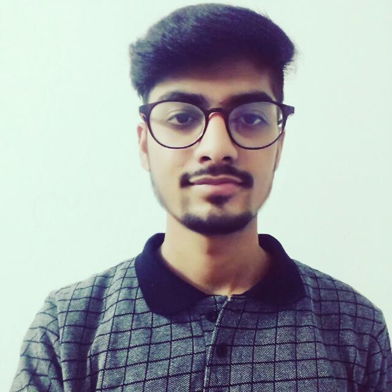

Educational Background Project Experiences Learning Interests during B.Tech Hobbies Blogs Memories Useful Weblinks Contact Me

Hello Friends! My name is Shubham Kumar. I am from India which is a wonderful country in the world. In India, I belong from Bihar situated beside river Ganga. I am very happy that i belong from this beautiful country India. Iam enjoying life with my family and friends. I always remain happy and also try to make other people happy. I remain keen to know about every aspects of life and try to get useful experiences from surroundings. I love my family and for me, my family and my friends are everything.
Now I want to tell about my childhood. My birth date is march 8, 2002. In my childhood, I play many games that i used to remember and feels that childhood is one of best age of any creature. In the free time, I used to explore new things and also move towards my interesting things. I love watching movies, listening to music, playing indoor and outgoor games, and reading books as well. My aim is to live for others. Since i got life from others so it should be dedicated for the others. Before coming at this age , i had provided my services to few people what i was able to do that time. I never think bad for the others. Now at this age , I am pursuing B.tech in computer science branch from iit Roorkee. I am very glad that i came in this prestigious institute.